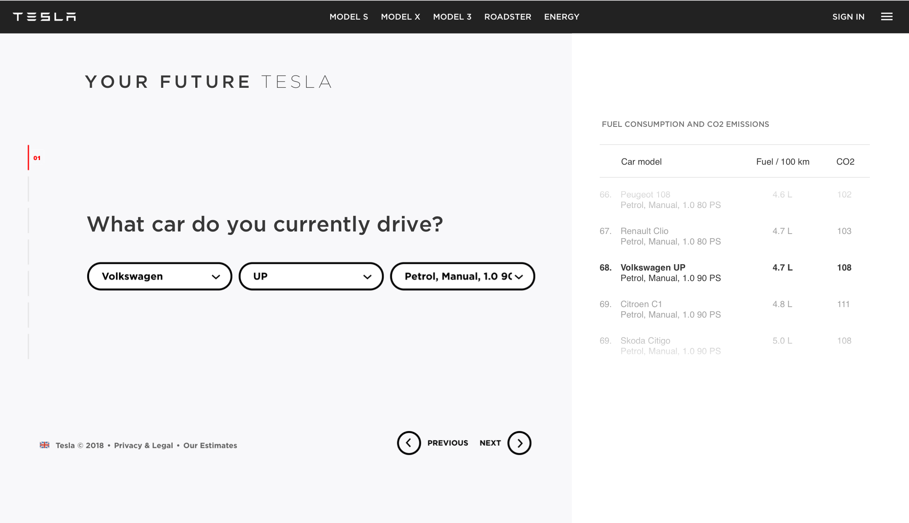

Intro
I like the idea and the approach you come up with. However, in the following design exercise, I look at the existing solution through critique lens. It helps to reveal issues and come up with new ideas. In any case, all ideas need to be validated either through A/B and ideally, user-testing.
The first part of the exercise is a brief review of the existing solution. In the second part, I propose some changes to improve UX for the existing solution. And then I also provide conceptual design challenging initial idea. Due to lack of time, I can not describe everything very broadly but I hope design speaks for itself. Otherwise, I would love to come and present my work.
In the assignment, I focus on the desktop solution.
Part 1. Review of the existing solution
Landing screen
In order to understand the meaning behind the message ‘Your Future Tesla’ people need to watch the video. The video demonstrates all the beauty of Tesla cars and reminds users of 3 models they might consider in the future.
Potential issues
- The video might be a blocker for some users (mobile, for instance).
- Hard to get the person at the right moment ("I will watch it later with headphones", etc.)
- No way to skip it right away (however a user is able to skip it when the video starts).
The video might engage some users but considering that they would need to complete questionnaire afterward they might quickly lose this inspiration if they don't see the clear reasoning behind the effort they put.
Starting screen
The user will get a personalized video. But not clear when and what about it would be. People might create false expectations about the personalized video and it may lead to misunderstanding. Even if the video is absolutely great and will change people's minds it’s still the case.
Potential issues
- Users might create false expectations and misunderstand the concept.
- No specific reason for users to start answering the questions now.
- What time will it take from me? (5 mins, 20 mins).
- When will I get the video? (Right after I complete questions, in a week?)
Every extra effort from a user will lead to losing potential customers. Every uncertainty in most cases will lead to misunderstanding and false assumptions which is also negative for customers and business.
Questions
All questions seem clear and all screens communicate clearly why would you need this information. However, all questions sound direct and don't reward the user for the answers. It might lead to losing potential customers.
Potential issues
- A user might lose interest during these 6 steps, there is no 'reward' for answering each of these questions. Yes, a user will get the personalized video but it's not clear when and how useful it will be.
- The solution is focused only on people with a car.
Part 2. Improving questions experience
As a first step I would solve the problem with rewarding users. To keep users engaged during questions I would give them some insights related to their answers. For instance, when a user selects current car the information about emissions and fuel consumption in comparison with other cars will be given:

The same approach is taken for other questions. This should engage users and let them go through the questions easier.
For 'Where do you live?' question I display the map showing chargers and where it is possible to get with a single charge.
After selecting one of the most important features in a car I display a feature of one of the Tesla cars as an example.
In planning question I display a life-cycle of getting a Tesla helping to understand main steps and action on the next one.
In the last step, it's important to mention what would you get after and reinforce user to give the final details.
Part 3. Conceptual design
I also did conceptual design. I challenged existing personalized video idea but not only. I also worked on interaction details. Conceptual design helps to take a broad view of the problem and come up with a bunch of ideas and many of them might be still applied to the existing solution. So here it is, what I changed in the concept and why:
- Bring practical value. People will get a PDF document with an individual plan how to switch to Tesla. Unlike the video, it brings real value and can be used for practical purposes. I assume it might be updated easier from our side and bring more informed customers.
- Remove blockers. No video on starting screen, from initial screen users can understand the idea and with just one scroll move to the first question. Basically, it's one landing page.
- Minimize effort. No wizard. Next questions appear as soon as user answers the previous one. The user is able to move forward just with one scroll. (However, for mobile this experience might be different).
- Manage expectations. On starting screen I communicate how long it would take to finish the questions. It helps busy people to manage time and minimize uncertainty.
- Focus on user. I did not want to show off the Tesla cars here. I was limited with images I could use but I wanted to communicate that it's not about Tesla cars, it's about you and what suits you.
- Talk to user in their language. I played with the copy and changed almost all questions turning them into interests of users. For instance, 'What car do you currently drive?' > 'How sustainable is your current car?'. When I put it in this way users will not question why I am asking about it.
- Keep user engaged. After a user answers the questions the information is updated on the right side of the screen providing interesting insights. It helps to keep the user engaged.
- Be informed by data. On the first question, I show most popular car logos (based on the research). It will require much less effort from the user to select a car brand.
- Operate with common terms. I also changed the question about the number of seats. Considering options I thought it will make sense to have 'small', 'medium' and 'big'. That's how people usually think and talk about cars.
Please, take a look at the concept below. It shows all steps filled in:
Thank you
In conclusion, I would always take an iterative approach and test new ideas and hypothesis by incremental changes (not necessarily small). The core principles I followed in the assignment will always lead to higher conversion and happy customers.
- Focus on user needs and problems.
- Remove friction and unnecessary effort from users.
- Experiment with copy, we often underestimate it.
- Keep user engaged during all the journey
- Bring the real value to the user.